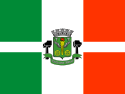

Hino de Osasco

De mãos dadas, unidos, mil sonhos
Gestaremos no sul do querer
O ontem vitória dos tempos
Faz o hoje feliz florescer
É Osasco cantando a História
As glórias de um povo em ação
O movimento dos autonomistas (bis)
E vôos que a vista
Dá no coração
Osasco
Osasco brilha
Na América do Sul
Foi em Osasco que o Homem
Sonhou e conquistou
O céu azul
Osasco
Osasco trilha
Os corações do porvir
Do trabalho ao esporte: a semana (bis)
A arte proclama
Um jeito de ser Brasil
De mãos dadas, cultura e raças
Se embalaram num mesmo querer
E do sonho se fez a cidade
Que hoje se orgulha de ser
"Osasco-Cidade Trabalho"
Bandeira de um povo em ação
Unido na fé e esperança (bis)
Brasão da vitória
Do "SIM" sobre o "NÃO"
Osasco
Osasco brilha
Na América do Sul
Foi em Osasco que o Homem
Sonhou e conquistou
O céu azul
Osasco
Osasco trilha
Os corações do porvir
Do trabalho ao esporte: a semana (bis)
A arte proclama
Um jeito de ser Brasil
Adicionar à playlist
Tamanho
A
A
Cifra
Imprimir